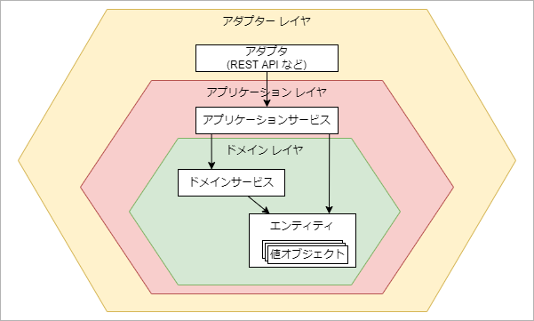

ドメイン駆動設計（戦術的設計）
筆者: 海老原 賢次（ebi311@gmail.com）
作成日: 2022-05-18
更新履歴:
- 2022-05-18: 新規作成
本ページは、先にドメイン駆動設計（戦略的設計）を学んでいることが必要です。
ここでは、ドメイン駆動設計のより実装に近い戦術的設計について解説します。
アーキテクチャ
DDD の戦術的設計として実装に近いところに入っていきます。
整理された戦略的設計を実装に落とし込むときにそれが無駄にならないよう、アーキテクチャの設計を慎重に行うべきです。
また、レイヤーやモジュールの役割を明確化する事が重要で、そうすることで疎結合な見通しが良く、メンテンナンス性に優れたシステム構成を構築しなくてはなりません。
また、気をつけるべきはアーキテクチャ設計時だけでなく、アーキテクチャ設計で決められた指針に従ってコーディングされえていることが大事です。ですので、DDD のアーキテクチャについては開発者全員がその意義と意味を知っており、レビューにてこの観点で評価されている必要があります。
ヘキサゴナル・アーキテクチャ
アーキテクチャとしては、昔からレイヤード・アーキテクチャが採用されることが多かったと思います。
このアーキテクチャで問題になるのは、ドメインがインフラストラクチャ・レイヤに依存することです。インフラストラクチャ・レイヤに依存するということは、ドメインレイヤ内にデータをデータストレージから取得したデータをドメインにマッピングしたり、データを保存するロジックが入り込むことになります。データストレージが RDBMS の場合では、SQLの処理が入るわけです。
ドメインレイヤでは、ビジネスルールを実装することに注力する必要がありますが、データの入出力やマッピングに関しては全く関係のない処理です。なのに、ドメインがテーブルの構造やSQLについて知っている必要がある、ということになります。
実際の問題としては、データストレージの形式や種類が変わったときに、ドメインレイヤが影響を受けることになります。どのドメインレイヤ内のいろいろな箇所にデータの処理が書かれているでしょうから、そのメンテナンスが大変なことは想像できるかと思います。
そこで、アプリケーション・ドメインの両レイヤと、インフラストラクチャ・レイヤの依存関係を逆転（DIPといいます）させるようにしてみます。具体的には、上位レイヤのコンポーネントは、下位レイヤが定義するインターフェースに依存した実装とする、ということです。

クラス図の例を挙げるとしたら下記のようになります。
各レイヤの役割と内部構造
各レイヤの役割とその内部構造について解説します。
- アダプターレイヤ
-
REST APIの定義などの実装です。RestAPIの場合は、リクエストの受付、クエリ文字列やBodyなどのパース、目的のアプリケーションサービスの呼び出し、クライアントへのレスポンスなどが主な処理となります。アプリケーション・サービスのクライアントとなります。
先述のデータベースの処理などのインフラストラクチャについてもここで実装します。
- アプリケーションレイヤ
-
ここでは、ユースケースのフローの実行が役割となります。フロー毎に、アプリケーションサービスとして実装します。ドメインサービスやエンティティのクライアントとなります。
具体的には、ユースケースのフロー１に従ってドメインサービスやエンティティのビジネスロジックを呼び出し、結果をアダプターに返すことです。アプリケーションロジックを処理しますが、ビジネスロジックがここに混入していけません。この両者の違いについては後述します。
値を返すときに、エンティティには値オブジェクトのプロパティやビジネスロジックのメソッドが含まれるが、それらはアダプターレイヤでは必要ありません。必要な値だけに加工したシンプルなオブジェクトを返すようにします。
複数のエンティティから値を取得して合成して返すこともあります。例えば、CEサイトで注文の処理では注文のエンティティに加え、商品のエンティティが必要になります。それぞれのエンティティの情報の取得を２つのアプリケーションサービスを提供しても良いのですが、アダプターからは2回コールする必要があります。2つの情報を1つにまとめて返すのが効率よい場合があり、そういった合成の処理をアプリケーションサービスで行います。
アダプターの種類に依存するような処理は入れないようにします。例えば、RestAPIのクエリ文字列の分析などをここでは行ってはいけません。アダプターレイヤで分析し、必要な値を引数で渡されるようにします。
- ドメインレイヤ
-
ドメインオブジェクトのビジネスロジックとプロパティを保持するレイヤとなります。
「エンティティ」は、ドメインオブジェクトの実装となり、「値オブジェクト」として状態を、メソッドでビジネスロジックを持ちます。
また、エンティティのインスタンスに依存しないビジネスロジックは、「ドメインサービス」として定義します。
値オブジェクト、エンティティ、ドメインサービスはこの後で詳しく説明します。

値オブジェクト
ドメインの情報で一番小さな単位である、値オブジェクトについて説明します。
値オブジェクトは、そのドメイン内で、何かを計測したり定量化したり、説明したりするもので、必ず何かしらの属性によって意味づけられます。属性とは例えば、文書の「作成者」であったり、「作成日」であったりします。
値オブジェクトの特徴としては下記が挙げられます。
- 関連する属性を不可欠な単位として組み合わせることができる。
- 不変である
- 交換ができる
- 等価性によって比較できる
- 副作用のない振る舞いを提供する
それぞれの詳細を見ていきましょう。
関連する属性を不可欠な単位として組み合わせることができる
システムで氏名を持つ必要があるとします。下記のようなオブジェクトを考えてみます。
表示をするときに、姓名で表示するところもあるでしょうし、姓だけを表示したい場合もあるでしょう。その場合には、下記のようにします。
問題なさそうです・・・本当にそうでしょうか？
次のような場合は、どうでしょう。
tiger は、姓ではなく名ですね。地域によって姓名の順番が異なるのは、皆さんのご存知のとおりです。
なぜこのようなことになったのでしょう。それは、name の文字列の中には、姓や名の情報が無いからです。
では、こうしてみたらどうでしょうか？
プロパティ名で明確に”何であるか”が示されているので、間違えようがないですね。このように、システムでは必ずしもプリミティブ型で値を保持する必要なく、オブジェクトにすることにより柔軟な対応ができます。
このように、関連する属性を組み合わせたオブジェクトで表現するようにします。
しかしまだ、この user オブジェクトは、値オブジェクトとしては不完全です。値オブジェクトの次の特徴を見てみます。
不変であること
プログラミングではプリミティブ型の値を頻繁に使用します。それらの値は、不変である、という性質を持っています。
しかし、実際には変数の値を書き換えることは頻繁にやっているような気がします。
これは値が不変である、と矛盾しているのでしょうか？
そうではありません。実は、これは変数の値を交換しているいるだけで、もとの String を変更しているわけではありません。
リテラル文字列は、それが登場する度に新しい文字列を生成します。=でもって変数の値を”入れ替えている”のです。
もし、文字列を”変更”できるのあれば、次のようになるはずです。
変更とは、そのもの自体は変わらずに、そのプロパティだけが変わる、ということです。なので、このような不思議な自体になるはずなのです。
では、前に紹介した user オブジェクトはどうでしょうか？
このコードでは、userのオブジェクトが”変更”されています。これはプログラム言語仕様に不備があるのではなく、オブジェクトの性質が値ではないからです。
user を値として扱う以上、プロパティを変更できないようにし、値を変更するのであれば新しいオブジェクトを生成して、作り直すして交換する(後述します)必要があります。
Note
不変であることのメリット・デメリット
「ドメイン駆動設計入門 ボトムアップでわかる！ドメイン駆動設計の基本」では下記のメリットとデメリットがあると謳っています。 このメリットの方がデメリットの大変さ上回る場合が多く、不変であることを原則として設計するのが良い、とのことです。
- メリット
- 状態の変更によるバグを生むことはない。
- 並列処理で、値が変更されることがないので、容易に実装できる。(下記を参照)
- シングルトンオブジェクトが使いやすい
- デメリット
- プロパティの一部を変更したいだけなのに、オブジェクトを生成しないといけない。
- パフォーマンスに影響がある場合も
| 不変なオブジェクトを渡した関数の参照 | |
|---|---|
| 変更されるオブジェクトを渡した関数の参照 | |
|---|---|
交換が可能である
値は不変ですが、プリミティブ型で示したように、入れ替えは可能です。値オブジェクトの場合は、下記のようになるでしょう。
等価性によって比較される
値の内容が同じであれば、比較したときに"等しい"と判定されるべきです。
当たり前のことを言っているように思えますが、===(JavaScript の場合) によるオブジェクトの比較は、同一オブジェクトかどうかを判定します。内容のプロパティの値を参照するわけではありません。そう考えると、上の比較の結果は矛盾しています。
実は、JavaScript でのプリミティブ型の比較では、値そのものは異なるのに内容が同一とみなすことをしています。
値オブジェクトとしては、上の user1 user2 は同一のものとして評価したいです。そのためにはオブジェクトにメソッドを用意する事が考えられます。そのために、クラスを導入してみます。
Note
コンストラクタ関数の引数に、readonly をつけているのは、引数をプロパティとするときのショートハンドです。下記と同等です。readonly の代わりに public と書くこともできます。その場合は、もちろん readonly にはなりません。
Note
オブジェクトに equals 関数を追加しなくても、deep-equalのライブラリを使用することで、内部の値での比較ができます。
副作用のない振る舞いを提供する
値に振る舞い＝メソッドを付与することができます。上で等価の評価関数を追加しましたが、それになります。
他にも、表示時に保持している値そのままではなく、加工したものを出力したい（例えば、年度-順列番号 など）場合に、各箇所で園フォーマットをするのではなく、値オブジェクトにメソッドをつけることで、その処理を一元化できます。
下記はよく国際的に使われる、Family Name を大文字で表す表記で出力するメソッドを追加した User クラスです。
他には、値の複製というメソッドがあっても良いかもしれません。
注意しなくてはならないのが、「不変であること」でも説明したように、値オブジェクトのプロパティの値が変更されてはいけません。これが、「副作用のない」ということになります。（非破壊的メソッドともいいます）
値オブジェクトを採用するモチベーション
見てきたように、プリミティブ型をそのまま使うより、値オブジェクトとしてクラスを定義するほうがコーディング量が増えて、これを採用するのに拒否感がある人も多いと思います。
しかし、値オブジェクトを採用するメリットを理解して採用する動機としてもらいたいです。
- 表現力が増す
-
「副作用のない振る舞いを提供する」であったように、プリミティブ型と異なり、任意のメソッドで値の様々な提供ができるようにあります。
コンストラクタも活用できます。例えば、オブジェクトに一意なID（サロゲートキー）をふることが多いと思います。コンストラクタでそのIDを生成するように書くことができます。
そうではなく、別な場所でIDが生成されたとすると、そのIDがどこから生成されたのかを探る場合、非常に時間が掛かるでしょう。もしかしたら、システムの中の複数の場所で生成されているかもしれません。
値オブジェクトとしてクラスが定義されていると、コンストラクタにあるだろうと、簡単に予測できます。（そこになければ良くない設計です。）
- 不正な値を存在させない
-
システムの値にはルールが存在します。例えば、年月を保持する場合、プリミティブ型であればそれぞれ数値型になるでしょう。
しかし、月は 1～12 というルールが存在します。プリミティブ型の場合、その入力チェックなどでチェックすることになりますが、その場所が UI であったり、APIのいち口であったり、オブジェクトを作成する関数であったり・・・とどこでチェックされて、どこでチェックされないかを認識することは難しいです。
特定のパターンでチェックが逃れていた、という経験は皆さんあるのではないでしょうか？
値オブジェクトで、コンストラクタでそのチェックを行うこととすることで、ビジネスルールを確認することが容易になります。
- ロジックの散在を防ぐ
-
上で上げた出力のためのメソッドや、値オブジェクトのチェックなどのロジックを値オブジェクトに実装することにより、それらのロジックが散在することを防ぎます。
また、逆に書いていないことはルールにはない、ということもわかります。これは当たり前ですが、重要なことです。ロジックが散財しているとそれも叶いません。
- テストが容易になる
-
値オブジェクトにルールを設けるので、そのルールに絞ってテストが書くことができます。つまり小さい単位でのテストができるようになり、その管理が容易になります。
テストが容易になるということは、テスト駆動開発が容易でテスト不足が見つけやすなり、システム全体の品質が向上します。
エンティティ
エンティティは、ドメインモデルを実装したドメインオブジェクトです。複数の値オブジェクトのプロパティを持つことになります。
これまでの開発では、ドメインよりもデータに注目してしまい、データベースの形を意識した実装になっており、その結果巨大なエンティティと大量の getter / setter で埋め尽くされてしまいがちです。そうなるとスパゲッティなコードに陥りやすくなります。
また、画面を先行して設計してその画面の項目をエンティティとするのも、現実に扱う物とは別のものになるでしょう。画面では複数の物を扱ったり、画面には現れない値が存在するからです。逆にもしドメインオブジェクト毎に画面を作ったのだとしたら、そのUIは業務を反映したものではないはずです。
戦略的設計で分析したコンテキストであつかうドメインモデルを、実装に落としたものがエンティティとなります。データを設計する場合、
システムでは、このようなエンティティを多数扱うことになるもので、中核になるものと言えるでしょう。
エンティティの性質を見ていきます。
可変である
会社のPCの機材を管理するシステムを考えてみましょう。ここではそれぞれ固有のPCの情報をもちます。その属性には、名前、メーカー名、購入年月日、使用者等々あるでしょう。このPCがエンティティとなります。
値オブジェクトでは値が不変である、ということを話ししました。PCの使用者が変更したら、そのPCは全く別のPCを指すようになるでしょうか？もちろん、そんな事はありません。属性が変更されても PC 自体は変更されません。
このようにエンティティが同一で内容が変更される可能性がある、つまり可変である必要があります。
では、機材を管理するシステムで、ユーザーの値、例えば氏名の名字が変更されるでしょうか？そうではないですね。そのため、PCの使用者のプロパティの値オブジェクトとなります。
コードとしては下記のようになるでしょう。
上の例では、プロパティ _user を直接公開するより、getter, setter を使ったほうが、のちの拡張性が保てます。例えば値オブジェクトとしては、問題なくてもエンティティのルールに違反する場合もあります。その場合は setter 関数でチェックすることで保護することができるからです。（TypeScriptを使っている場合は、はじめはプロパティを公開し、後に必要なときに変更してもいいと思います）
プロパティは全てが可変である必要はありません。ドメインのルールに従って変更の可不可を決定することが大事です。
また、可変でなければならない、ということもありません。不変であることがドメインオブジェクトにとって重要なときもあります。
一意な識別子
値オブジェクトでは、等価性によって比較されることが必要でした。では、エンティティではどうでしょうか？
同じPCを同じ使用者が2台持っていた場合、そのエンティティのプロパティは同一です。では値オブジェクトと同じようにその2つは等価である、と言えるでしょうか。
もちらん、そんな事はありません。物自体が2つあるのですから、同じ値を持っていたとしてもそれらは別のものとして扱うべきです。しかし、プログラム上ではそれらが同じものである可能性もあります。例えばデータベースから取得してきたそれらは、同じか違うものかを判断することができません。
固有性を判断するために、エンティティには一意なIDを付与することが良いでしょう。では、そのIDは誰が発行すべきでしょうか？
- ユーザーにIDを入力してもらう
-
1つの方法としては、ユーザーに指定して貰う方法です。例えばブログの文書であった場合、そのタイトルをIDとすることが考えられます。この考えは非常にシンプルですが、IDは一意でないといけないのに加え、他のエンティティが参照するものであるので、不変にしたいところです。しかし、ブログのタイトルが変更できないというのは、ユーザーとして受け入れがたい仕様でしょう。
ビジネスルールとして、不変であったり重複を禁止するものであったとしても、ユーザーが入力した値をIDとするのは問題が発生しがちです。
- プログラムがランダムなIDを生成する
-
プログラムでIDを生成することが考えられます。これは、ビジネスロジックとして値オブジェクトが生成しても良いでしょう。ただし、システムが分散環境にあり、複数のロジックが同時に動く場合、そのロジックが重複な値を生成しないことを確認しなければなりません。
その場合でも UUID(v4) を使用すると、重複の心配は無いものとしてよいでしょう。
ただし、生成された文字列は人が見ても意味がないものなので、画面では隠しておいたほうが良いでしょう。
Note
Node.js を使用する場合、UUIDと同等かそれ以上の一意性で、UUIDより短い文字列を生成できる、ai/nanoid: A tiny (130 bytes), secure, URL-friendly, unique string ID generator for JavaScript を使用することをおすすめします。C# や Java でも提供されています。リンク先をご確認ください。
nanoid ではデフォルトの設定で、1時間に1000個のIDをずっと生成し続けたとして、1%の確率で重複するまでかかる時間は、1490億年かかります。地球ができてまだ4億年、宇宙ができてまだ13億年なので、重複しないと判断よいでしょう。
プログラムがシーケンシャルな数値のIDを生成する
連番で生成する場合、それを生成するロジックが必要になります。こちらは、システムが分散環境にある場合、そのロジックが分散されることに十分配慮する必要があります。
例えば、データベースに現在の値を持っておき、取得と更新を同一トランザクションで行うか、システム全体で1つのインスタンスとし、キューイングによって順次処理させる、つまり並列で処理されないようにするなどの仕組みを考えなくてはなりません。
いずれにしても、それらの処理は採番のためのコンテキストを別にすることで、ドメインにその処理が入り込まないようにする必要があります。
エンティティの振る舞い
何かしらの属性の値を更新したい場合、そのコンテキストのユビキタス言語にある用語をつけるようにします。
例えば、PCの所有者を変更する処理の場合 setter を使った、
ではなく、
とします。こうすることで、PCエンティティの仕様として、「ユーザーを変更することができる」ということをコードで確認できるからです。
このように、コードを見ることで仕様が理解できる、というのはメンテンナンス性において非常に重要です。
ドメインのユビキタス言語を意識せずに、単純に1つの属性ごとにメソッドを1つずつ設けるのではなく、操作によっては複数の属性を1つのメソッドで更新することもあるでしょう。ビジネスルールを表現豊かなエンティティとして実現する必要があります。
バリデーション
値の検証をどこで行うのかについては、システムでは常に課題になります。
一言で検証といっても、単純な null や文字列長のチェックなどから、複数の項目の関係から判断することもありますし、一意性の制約のためにデータベースに問い合わせるなど、外部のリソースに頼る場合もあります。
また、その制約はビジネスルールのものだけでなく、システム依存の場合もあります。
システム依存の制約の例としては、REST API では リクエストの content-type が想定されるものか、Body のJSONが正しいか、APIの仕様にあっているか、などのチェックです。こういったドメインとは関係のないもので、チェックがNGとなった場合、アダプタ・レイヤからアプリケーションサービスを呼び出すときに、必要な値が取得できないような制約については、アダプタレイヤ で行うべきでしょう。
ビジネスルールの制約は、現実世界での制約です。例えばユーザー管理では、姓名は必須であるとか、年齢は 0 ～ 120 までとかといったものです。これらは、ドメインで検証すべきです。
では、文字列長などの制限についてはどうでしょう。ビジネスルールで明確にあるのであればドメインでの検証です。しかし、それがデータベースの都合であったり、画面の表示上の問題である場合は、その扱いはどちらになるか微妙になります。
そういったものは、変化しやすい制約です。一旦アプリケーション・サービスで検証することとして、様子を見ることをおすすめします。
単一要素の検証
ドメインでビジネスルールを検証する場合で、それた単一要素の検証、例えば null チェックや数値の範囲のチェックであれば、値オブジェクトでのチェックになります。
複合要素や外部のリソースでの検証
エンティティに対する検証を考えてみます。エンティティの検証とは、例えばエンティティが持つ複数の値の状態により判定が決まるようなものの場合です。
値オブジェクトに、エンティティを渡して判断することもできなくはないです。
動作としては問題ないですが、配送希望日に関係のない Order が含まれるのは、納得できないでしょう。
エンティティの検証であれば、エンティティに設けるのが筋でしょう。
しかし、こういった検証が複雑になることが多く、また外部のリソースを利用する場合、多くの場合が非同期の処理になります。
そういったものは、後述するドメイン・サービスで実装するのが良いでしょう。エンティティのコンストラクタでチェックしていたものであれば、ファクトリー関数を作成し、クラス自体は非公開にすることも検討してください。
また、状態が複雑な場合、エンティティの値が変わる度に例外を発生させられない場合もあります。一時的に不完全な状態がある、ということですね。そういった場合は、遅延検証を行うと良いでしょう。
これは、現在の状態をチェックし、問題がないかを返すメソッドや関数を用意する、ということになります。エンティティに含めても良いでしょうし、ドメインサービスで用意しても良いでしょう。
ドメインサービス
ドメインサービスは、エンティティや値オブジェクトに入れるのがふさわしくないビジネスルールを実装する場所として提供されます。個別のエンティティに依存しない処理や、複数のエンティティをまたがるようなルールです。
もう少し具体的例を挙げておきます。
- 特定のエンティティの存在チェック（エンティティの存在をエンティティにさせることはできない）
- 複数のエンティティを同時に作成または更新する （エンティティに他のエンティティのロジックを埋め込まない）
- 複数のエンティティの値から計算した値を出力する（計算のロジックはビジネスロジックだが、特定のエンティティがない）
- エンティティの検証に、他のエンティティが必要（同上）
ドメインサービスを利用するときには、下記に気をつけるべきです。
- 状態を持たない関数となっているか。（べき乗等性が確保されているか）
- エンティティや値オブジェクトにおくべきではないか。
- ドメインサービスは便利に見えるので、なんでもここで実装すると、エンティティがドメインモデル貧血症を発症しかねません。
- まずは、エンティティで賄えないかを確認して、どうにもおかしい、不自然さがある、という場合にドメインサービスを使います。
- 単一の機能を実装する
- 複数のことをやらない。
- 関数名にユビキタス言語を使用する。
- 適切な語がなければ、何かが間違っている可能性があります。ここで書くべきでないか、アプリケーションロジックが混ざってないか、複数のルールを書こうとしていないか・・・など、検討してみてください。
- アプリケーションロジックでないか。
- 手順的な処理は、アプリケーションサービスに実装します。例えば、登録処理とその通知処理と言った一連の処理です。それぞれの処理はドメインレイヤで処理しますが、それぞれの呼び出す順番をアプリケーションサービスで制御します。
- 外部のリソースを直接参照していないか。
- 外部のリソースが必要な場合、例えばDBやRedisなどのキャッシュシステムにアクセスする場合、レイヤーアダプタのインフラストラクチャで実装します。ドメインレイヤでは、そのためのインターフェースを提供します。
Note
インターフェースを定義したパッケージと別のパッケージにそのインターフェースの実装がされることを、セパレートインターフェースといいます。
パッケージの一方通行の依存関係を崩すこと無く、シンプルになるというメリットがあります。
ドメインイベント
ユースケースで、「〇〇した場合に、□□を変更したい」「もし〇〇になったときに、△△に知らせてほしい」といったことが往々にしておあります。
その場合は、ドメインイベントを活用するときかもしれません。
- ドメインイベントを利用する利点
-
イベントを使わない場合、監視対象のエンティティに監視者の処理を入れ込む必要があります。イベントを利用すると、監視対象の変化するオブジェクトに、外部から処理を登録することで、監視対象が監視者を知る必要がなくなり、エンティティの内容をシンプルに保つことができます。
集計処理など日次で動くバッチ処理などを作成することが多いですが、イベントを利用することで、変更分だけを即時更新するなどで、バッチ処理が不要にできる場合もあります。
ドメインイベントの例
例えば、請求書と明細という２つのエンティティがあり、1:n の関係があるとしましょう。
明細が追加・削除または変更されたら請求書の合計金額を計算し直す、という必要があるとします。
明細に onChange イベントを作成し、それに外部からイベントハンドラ（イベントの処理）を渡します。明細では、内容がコミットされた場合、または削除された場合にそのイベントを発火させます。
このように、いくつかのエンティティが関連する更新の場合、イベントを使用することで双方向になるような複雑な依存性にならず、シンプルになります。
このように、依存関係を後から入れ込むことを依存注入(DI)といいます。他にも、コールバック関数などを利用することも DI になります。
アプリケーションサービス
エンティティ、ドメインサービス、ドメインイベントで、ビジネスロジックを実行できる環境は整いました。しかし、アプリケーションとして、それらを呼び出して操作する必要があります。
例えば、文書を保存して、然るべきユーザーにメールで通知する必要があったときに、保存処理と通知処理はドメインレイヤで行うべきでしょうか。全く異なるコンテキストに存在しているべきなので、保存処理の中にメール送信の処理を書くことはナンセンスですし、通知のコンテキストに文書の保存処理があるのはなおさらおかしいと思うでしょう。
もう1つの例として、ある権限でもって実行できるアクションがあるとして、権限やロールの取得をそのアクションの処理の中で行うべきでしょうか。これもそれぞれ異なるコンテキストですので、一緒に処理するのは無理がありそうです。
しかし、それらは要件としてそれは存在します。
そういったビジネスロジックを処理する順番を定義するものがアプリケーションサービスです。
また、アダプタ層へドメインの情報を返す時にエンティティをそのまま返すのには難しい場合が多いです。Webアプリケーションの場合は、ブラウザとサーバーとの間はJSONでやり取りするのが通常で、そのためにはシリアライズ化が必要だからです。また、たとえオブジェクトのまま渡せたとしても、ブラウザ側でエンティティのアクションを実行することは困難ですし、アプリケーションレイヤを通さないので、そもそもブラウザで実行すべきではありません。
UIでは、値オブジェクトなどを持たない、シンプルなオブジェクトを扱い、データの送受信もそれを使用します。そのためシリアライズ、デシリアライズの処理が必要ですが、これもアプリケーションサービスの役割となります。
また、エンティティをそのまま渡すだけでなく、パフォーマンス等の問題から、アダプタ層で扱いやすいようにエンティティを加工したり、複数のエンティティをマージするなどすることも行います。
このようにデータのコンバートの処理が必要ですが、ビジネスエンティティやビジネスサービスに比べて処理は複雑では無いはずです。結果的にアプリケーションサービスは、「薄い層」になるはずです。
アプリケーションサービスが肥大化するのであれば、そこにビジネスロジックが潜んでいなか、確認してください。
Restapiの宣言とアプリケーションサービス
書籍によっては、RestAPIを定義しているのがアプリケーションサービス、というものもあります。決してそれは間違っていないのですが、APIの実装と、アプリケーションサービスで処理する内容はこれもまた別のそれぞれ関心のない出来事と捉えることができます。
ですので、ここでは、RestAPI の実装とアプリケーションサービスは、分けて設計することをおすすめします。

リポジトリサービス
リポジトリとは、一般的にデータを保管する場所を示します。それはデータベースであることもありますし、ファイルベース場合もあるでしょう。
プログラムで扱うエンティティは、殆どの場合永続化することが必要となるでしょう。しかし、そのリポジトリの種類や製品ごとにアクセスの方法が異なります。また、エンティティによってデータの構造がことなります。それら吸収するのが、リポジトリサービスとなります。
エンティティの種類によるものだからと行って、データI/Oの処理をエンティティに含めることはできません。データI/Oの方法はエンティティの関心事ではないからです。アーキテクチャの章で話ししたように、リポジトリサービスは、アダプタ層に存在してアプリケーションレイヤやドメイン層を参照する方向となります。
ファクトリを利用したリポジトリサービスの作成
リポジトリサービスは、ドメインレイヤで指定されたインターフェースに従って実装します。また、環境によってリソースが変わることを想定される場合、環境毎に実装が作成されます。
例えば、ステージングや本番環境ではクラウドプロバイダーのデータベースサービスを利用するが、ローカル開発環境ではローカルで実行できる別の簡易的なデータベースということも考えられます。
その場合、アプリケーションサービスではどちらのリポジトリサービスを利用するか（リポジトリサービスのインスタンスを生成するか）、選択しなければならなくなります。
そういったことをアプリケーションサービスではなく、ファクトリとなる関数でそれを決定し、返すようにします。インターフェースを設けていることにより、アプリケーションサービス側では、実装の種類の違いを意識すること無く実装することができます。
集約
エンティティに親子関係があったり、エンティティが大きくなると、複数に分けてたくなります。
その場合、エンティティ内に別のエンティティを参照することとなります。これを集約といいます。
エンティティを集約するときの注意点をあげます。
小さい集約とする
しかし、多くのエンティティを１つのエンティティに集約してしまうと、いろいろを問題が出てきます。
- オブジェクトのロックの問題
-
楽観的ロックによって同時編集を制御する場合、ロックエラーが頻発する。同一エンティティ内の別々の子エンティティを複数のユーザーが更新した場合、でもロックエラーが出るため。
- リソースの問題
-
エンティティが大きくなると、メモリに保持するサイズが増え、扱うオブジェクトが多くなると、メモリを逼迫させる可能性がある。
よってなるべく小さい集約としたほうが良いでしょう。子エンティティ毎に独立したトランザクションが適用できるのであれば、親エンティティにはIDだけ持たせて、それらは独立させたほうが良いでしょう。
ここで注意したいのは、小さい集約というのは、クラス図に出てくるクラスの数ではありません。配列などの場合、その数は0かもしれませんが、100かもしれません。その数が多いと、上記問題が発生しやすくなるわけですから、ここでは実際の数に注目してください。
その子エンティティは値オブジェクトではないですか？
エンティティを分割したときに、部分的な更新が必要なく独立したアクションがない場合、それは値オブジェクトとして定義されるものでしょう。
分割すると気には、まずは値オブジェクトで表現できるものであるかを検討して、それに無理があると判断した場合に、子エンティティとして定義しましょう。
まとめ
ドメイン駆動設計を一通り説明してみましたが、理解できたでしょうか？戦略的設計は、一回読んだだけではなかなか理解が難しいかもしれません。
また、戦術的設計も具体的な実装のイメージがわかないかもしれませんね。
これらについては、仮想のプロジェクト開発にて設計から実装を行う学習を計画しておりますので、そちらでより具体的に理解できるのではないかと思います。
本書は、ドメイン駆動設計の表面を網羅したにすぎませんので、戦略編のはじめの方で紹介した書籍を手元において設計や議論を行うことをお勧めします。